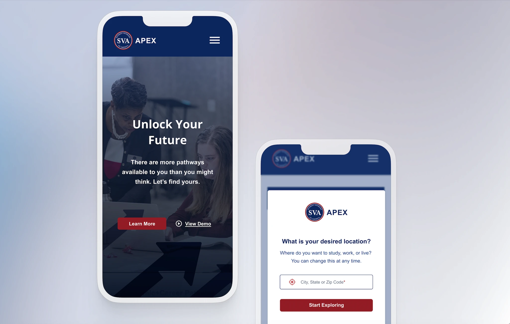
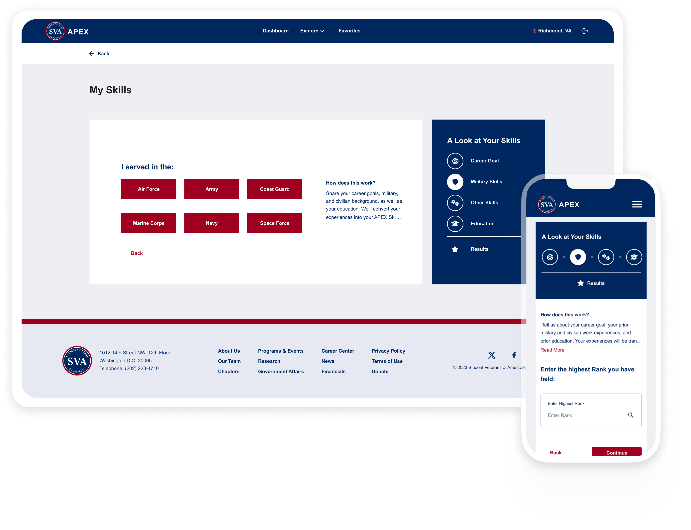
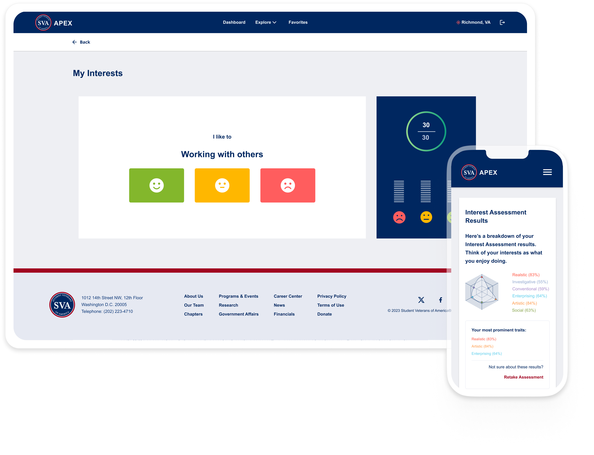

Designing a career platform for SVA's 750,000+ veteran network

The problem
A career platform veterans visited once and never returned to
SVA's APEX platform existed to help student veterans explore careers, find jobs, and connect with educational pathways. In practice, it wasn't working. Veterans would log in once, find it unclear or overwhelming, and leave without taking any meaningful action. Career coaches were working around it rather than through it.
The platform had been built by combining two existing tools — CareerPath Decide (CPD), which had deep military-specific data but was dense and outdated, and Exponential Pathways (XP), which had a more modern interface but lacked the depth veterans needed. The first version merged them, but inherited the weaknesses of both.
Why this was uniquely complex
Veterans in transition don't fit a single user model
Understanding the user
Veterans needed guidance before they needed features
Before designing anything, I led a structured Design Thinking session with SVA career coaches (Oct 3, 2024). Coaches were the closest proxy to member experience — they sat with veterans weekly and knew exactly where APEX fell short. Three things came out clearly: members didn't know where to start, coaches wanted to see member profiles before sessions, and the platform felt like a database rather than a guide.
That research shaped the core onboarding question: what is this veteran actually trying to figure out right now? Some were focused on financial stability — they needed a job, quickly. Some wanted work that connected to their military identity. Others were genuinely undecided and needed the platform to help them figure out what question to ask first. I used Maslow, Herzberg, and Self-Determination Theory not as academic scaffolding, but as a practical taxonomy for bucketing those different starting points — so the onboarding flow could route each veteran to the right first assessment rather than dumping everyone onto the same screen.
I also ran a competitive analysis of how Niche.com, LinkedIn, Coursera, Duolingo, and Zillow handled personalization, assessment flows, filtering, and alignment indicators. One finding directly shaped a core design decision: CPD's biggest failure was presenting all assessments side-by-side with no guidance. Veterans didn't know where to start and left without completing any.
The user journey we designed for:
The design
Personalization had to happen before the dashboard, not on it
The V2 redesign covered five interconnected surfaces: adaptive onboarding, a personalized dashboard, three assessments (Work Experience, Interest, and Education), occupation and institution explore pages with veteran-specific filters, and AI-standardized job detail pages. Each surface fed the next — onboarding data shaped what the dashboard surfaced, assessments shaped what appeared in explore, and the job schema made the detail pages consistent regardless of source.
Two of the most critical surfaces were onboarding — which established the personalization model for everything downstream — and the assessments, where collecting the right data in the right order determined whether recommendations felt relevant or random. Those are shown below.

Adaptive onboarding — branching by background
The skills assessment intake routes differently based on service history. Veterans select their branch, which determines the rank and MOS questions that follow. A persistent sidebar shows exactly where they are in the process — Career Goal, Military Skills, Other Skills, Education, Results — so the flow never feels open-ended.

Interest assessment with real-time results
The interest assessment presents a single statement at a time — "I like to: Working with others" — with three response levels rather than a Likert scale. As veterans respond, results build in real time in the sidebar panel: a radar chart maps their Holland Code profile across six interest categories, and their most prominent traits update live.
Key decisions
Three decisions changed the direction of the project
Behavioral frameworks before wireframes
Before designing a single screen, I mapped veteran motivation types to Maslow's hierarchy, Herzberg's two-factor theory, and Self-Determination Theory. This determined how onboarding questions were ordered, what categories responses were bucketed into, and which assessment was recommended for each motivation type. It wasn't academic — it was the architecture that made personalization possible downstream.
Structured job posting standardization
Live job postings from partner employers arrived in inconsistent formats with varying terminology. Presenting them as-is meant the job details page felt unreliable. I designed a structured JSON categorization schema, prototyped with ChatGPT, to parse incoming postings into standardized fields — responsibilities, qualifications, location, clearance, schedule — so every job detail page rendered consistently regardless of source. This was a systems decision as much as a UX one.
Designed for two-sided platform, built for one side first
Business requesters — employers and institutional partners — weren't ready to enter the platform at V2 launch. Rather than removing them from the design, I designed the workflow so their entry point was already accounted for: approval flows, visibility controls, and role-based access for partners are built in. When they enter the system, the workflow won't need to be rebuilt.
Outcomes
What changed at launch
Member adoption
75% adoption among the launch cohort — up from a platform veterans were visiting once and abandoning. Personalized onboarding gave users a clear starting point and a reason to return.
Career coach adoption
100% of SVA career coaches incorporated APEX into their sessions. The platform became a shared reference point for member goals, skills, and history — replacing side conversations and manual tracking.
Employer partnerships
A 60% increase in employer partnerships expanded the job inventory available to members. The platform's ability to deliver targeted, profile-matched candidates made it a more compelling partner offering.
Email engagement
80% increase in email click-through, indicating members found the matched recommendations more relevant and actionable than the generic outreach that preceded V2.
"APEX has allowed us to understand our members' career interests and to better match them with educational opportunities that align with their skills, as well as jobs that are a good fit for them. My coaching sessions are now much more efficient and effective."
More work
Finance Rules Engine — Designing a rule management platform for finance operations, from 5 tools to one. →
Finance Workbench — Dark mode dashboard for a complex financial data platform.